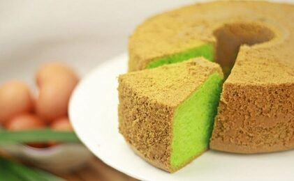

Bolu Pandan
Bahan:
- 5 butir telur
- 170 gram / 17 sdm tepung terigu segitiga biru
- 150 gram /10 sdm gula pasir (boleh nambah jika di rasa kurang)
- 75 gram / 6sdm mentega dincairkan
- 75 gram / setengah gelas belimbing minyak sayur
- 1 sdm tepung maizena (boleh di skip)
- 2 sdm susu bubuk (boleh di skip)
- 1/2 sdm garam
- 1 buah kara instan ukuran kecil
- 1 sdt SP / TBM
- 1/2 sdt baking powder
- 1 sdt vanili bubuk / 1 sdm pasta vanilla
- 1-2 sdm pasta pandan (sesuai selera)
Cara Membuat:
- Oles dahulu loyang dengan mentega, saya pakai mentega yang di gabung dengan tepung terigu.
- Siapkan wadah untuk mixer, pertama masukan 5 butir telur, gula pasir, SP / TBM kocok pakai mixer mecepatan tinggi sampai putih mengembang kental berjejak kira-kira 5-10 menit.
- Masukan tepung terigu + susu bubuk + tepung maizena + baking powder / baking soda + vanili bubuk + garam, kedalam adonan sambil di ayak ya. lalu mixer kecepatan rendah. kalau sudah matikan mixer.
- Sekarang masukan santan kara dengan teknik aduk aduk balik pakai spatula. setelah itu masukan pasta pandan aduk aduk kembali sampai rata.
- Sekarang campurkan dulu minyak sayur dan margarine cair kemudian diaduk-aduk. lalu masukan ke dalam adonan sedikit sedikit dengan aduk balik, harus benar benar rata agar tidak bantet. lakukan sampai habis, lalu masukan pasta pandan aduk balik.
- Panaskan dahulu oven sampai suhu panas dan stabil kira-kira di suhu 170 derajat atau kalau oven tangkring api sedang ya.
- Masukan adonan ke dalam loyang, lalu hentekan beberapa kali agar tidak ada gelembung dalam adonan.
- Masukan ke dalam oven yang sudah panas, panggang sampai matang kira-kira 35-45 menit (tergantung oven masing-masing).
- Keluarkan dari oven, biarkan sampai uap panas hilang lalu balikan dan siap di sajikan.